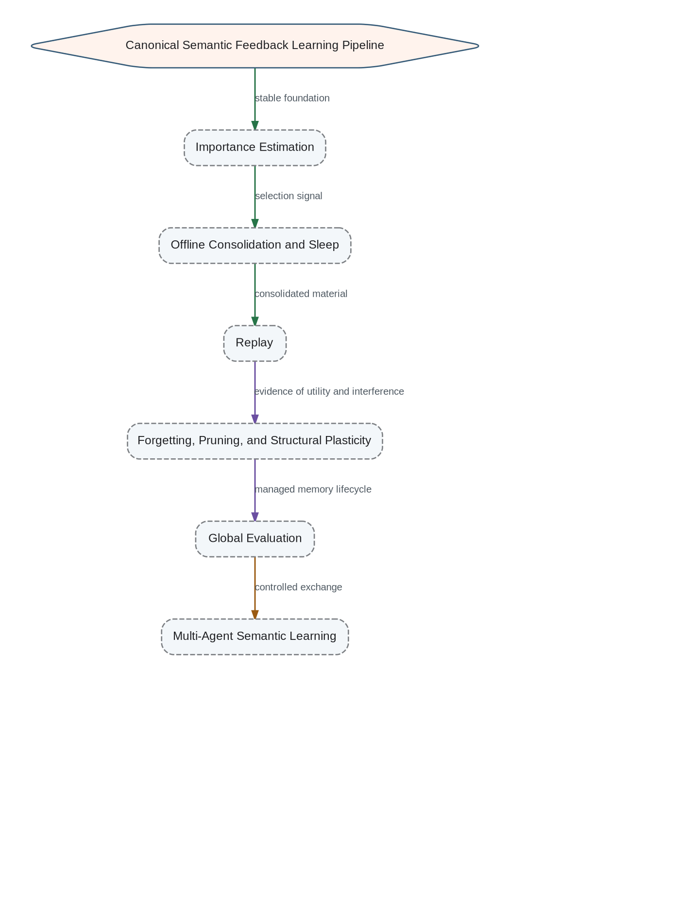

The next development cycle begins with the ability to estimate the importance of semantic knowledge. Consolidation requires a selection signal; replay requires a policy for deciding what should be reactivated and why.
Canonical Development Sequence

- 1. Importance Estimation
- 2. Offline Consolidation and Sleep
- 3. Replay
- 4. Forgetting and Memory Pruning
- 5. Structural Plasticity
- 6. Global Evaluation
- 7. Multi-Agent Semantic Learning